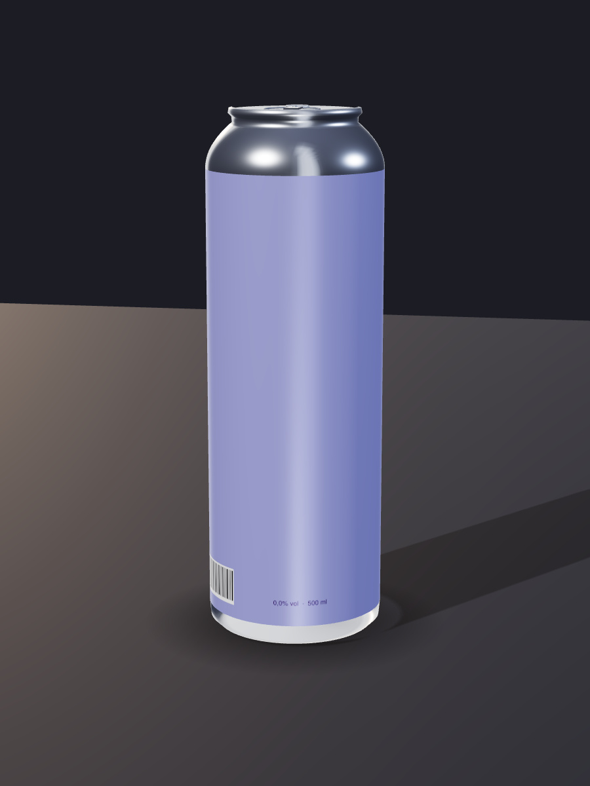
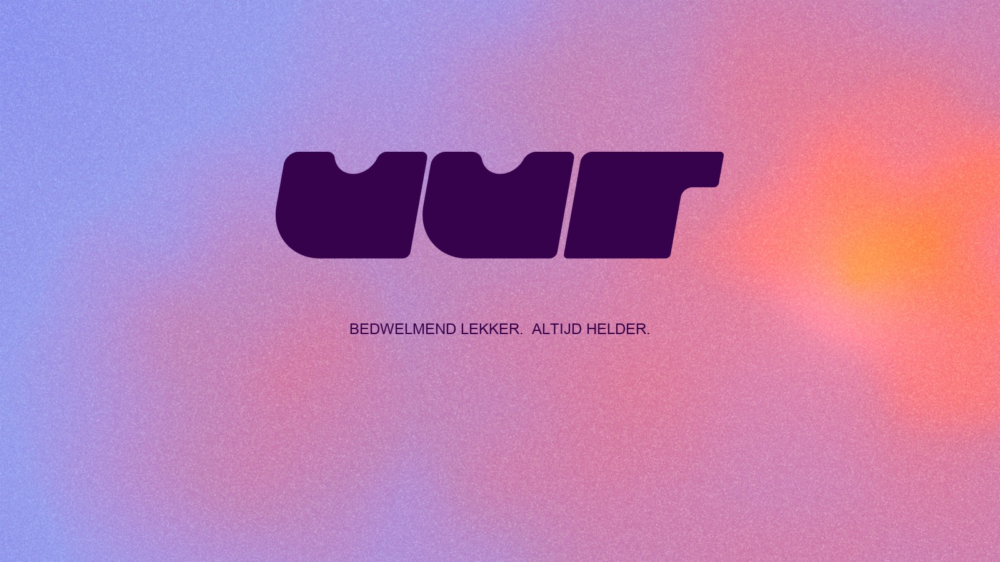
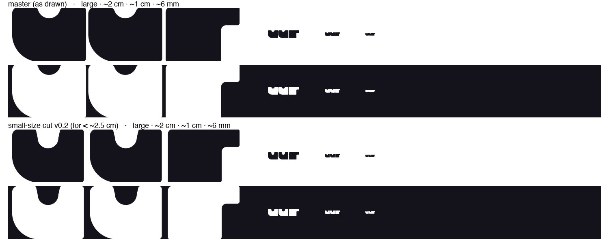
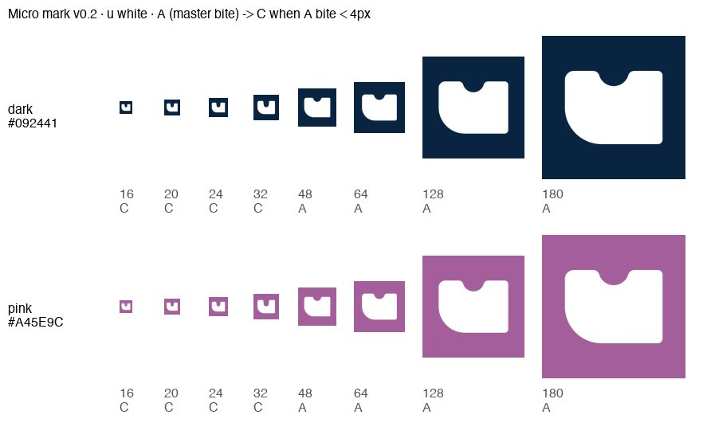
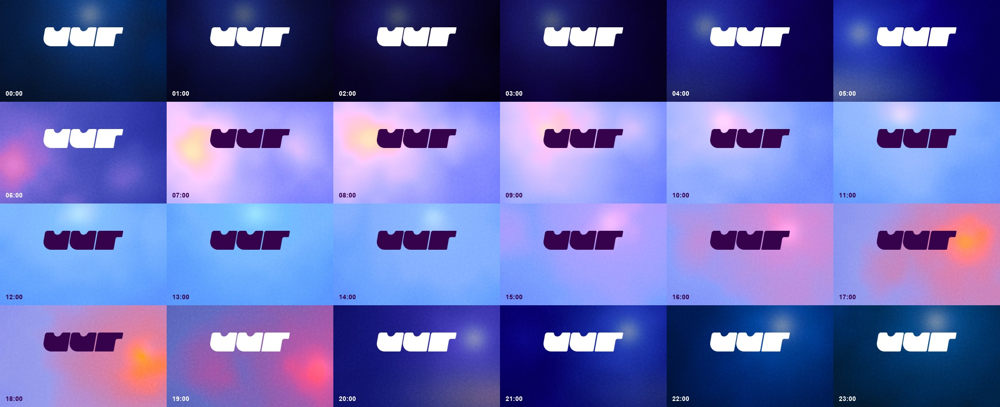
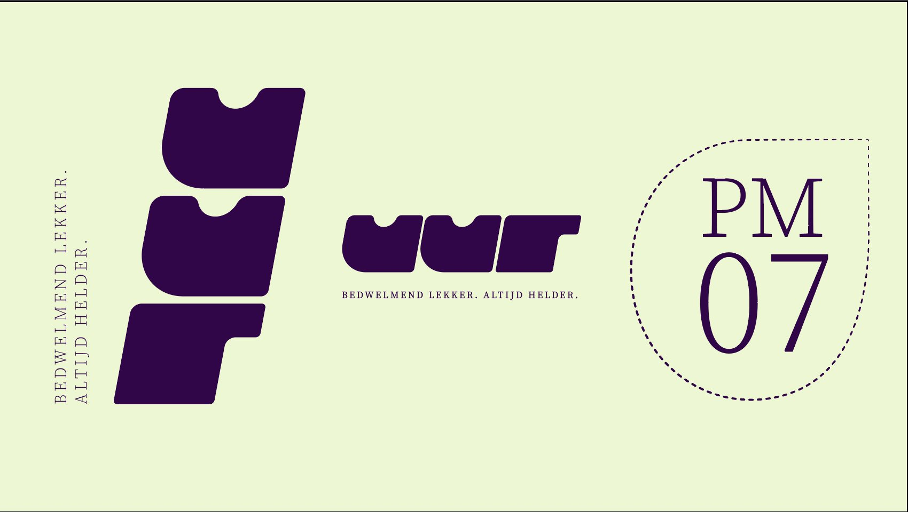
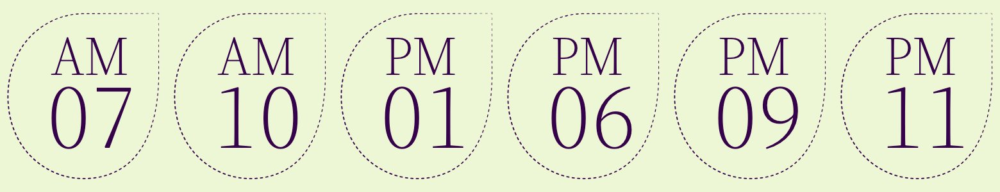
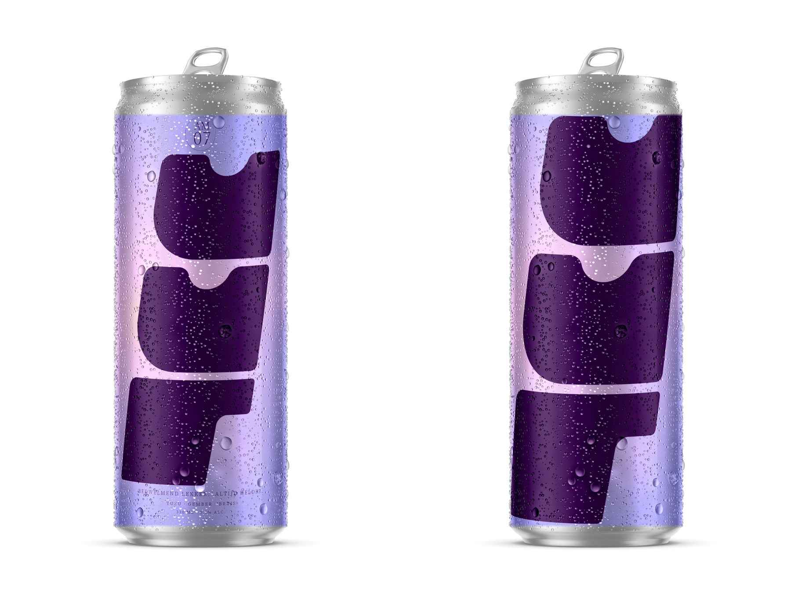
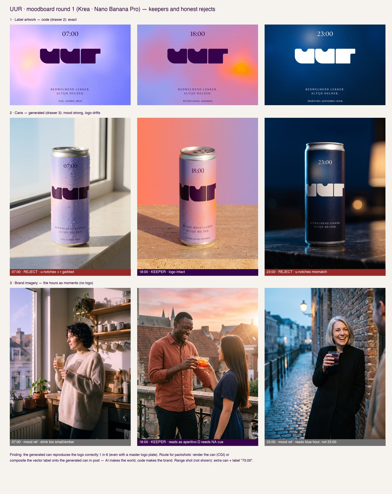
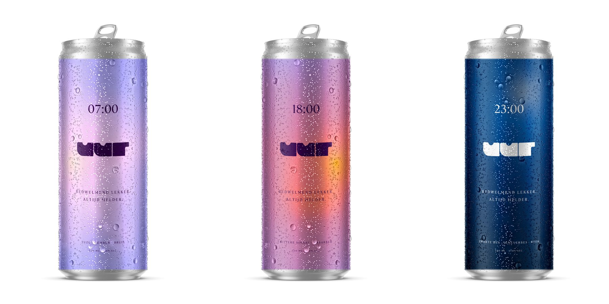

The full record · every test, every number · 1 November 2026
The full record
Every test we ran, with the numbers and the caveats. This is the evidence behind the story — written for anyone who wants to challenge a claim rather than read one. If you have not read the story yet, start there.
The brand core is designed, the parametric layer is built, and the kit now produces a print-ready packaging file that passes preflight unattended. The question we answer is not can AI reproduce a brand — it is which parts of a brand kit are load-bearing, and where control ends.
13/13producibility checks passed on the pack artwork, up from 10/13 — but identity is now 2 of 3: the flat now uses the decided vertical sheared packaging mark and real 18:00 palette; identity remains 2 of 3 because the supporting type is still Helvetica rather than the approved brand face
7/10reached by an identity-only kit; the three it misses are trim geometry, safe zone and barcode quiet zone
12/12voice rules passed with and without exemplars — a good prohibition needs no example
1 in 6correct logos when an image model makes the can: the boundary where exact artwork cannot be injected
What changed on 1 November
Three corrections, all of which made the claim narrower and more defensible.
Correction cost, not hit rates
A fidelity hit rate measures the image model of the month, so it expires. Correction cost — the human work between output and shippable — is a property of the brand kit, and it survives model upgrades.
Ablation, not with-kit vs without
Hand an AI the master logo file and of course it reproduces the logo; that comparison cannot fail, so it proves little. Removing one kit component at a time shows which components actually carry the result.
For packaging, the file — not a mockup
Asking a model for a packshot tests whether it can fake a file the kit produces exactly. So we produce the print-ready flat and check it with preflight, the same check the client's printer uses.
Method: three drawers
"AI-ready" is not one thing. Every brand element sits in one of three drawers, and each drawer is reproduced and reviewed differently.
Deterministic
Logo, tokens, type, layouts — assembled from the exact source file. Exact. Reviewed automatically.
Parametric
Palette, light, grain, motion — written as seeded code. Exact and infinitely variable. Same input, same output.
Generative
Products in scenes, lifestyle, video — made by image models with references. Faithful, not exact. Needs a human sign-off.
Why an invented brand: we own the ground truth, there is no NDA, and failures can be shown in public.
The readiness map
This is what a client actually buys. Not a badge and not a score — a profile. Every element gets a declared reproduction route, a source of truth a machine can read without interpreting it, a quality bar you can measure, who checks it, and a named person who owns the final call.
The evidence column is the discipline: measured, partly measured, or untested. A row with no evidence is a claim, not a finding — so we print the claims too.
Element
Drawer
Source of truth
Quality bar
Check
Evidence
Wordmark system
1
horizontal shear = public primary · vertical shear = packaging/portrait · upright = construction/fallback · micro-u at tiny sizes
correct variant selected by size and format; pixel diff ≈ 0 vs its source SVG
auto
measuredhorizontal shear validated ≥64px; current visuals corrected to the hierarchy
Small-size cut
1
separate SVG + min-size rule
legible 24–64 px
auto + human
measuredblind read
Micro mark
1
separate SVG
readable at 32 px
auto + human
partly measured
Colour tokens (24 h)
2
OKLab code from measured skies
colour distance to the true sky
auto
measured0.013 vs 0.086
Light field (the hour)
2
seeded code
same input = same image; hour readable
auto + human
measured10/10 blind
Grain
2
shader port of the designer's recipe
matches spec, no banding
auto + human
measured~80–85%
Type system
1
named families + hierarchy rules
no substitution
auto
partly measuredlicensing open
Pack structure spec
1
dieline, bleed, safe zone, barcode, type minima
preflight pass
auto
measured7/10 without it
Flat pack artwork
1 → 2
kit + pack spec, assembled by code
producibility 13/13 and identity 3/3
auto
partly measuredproducibility 13/13, identity 2/3 — stand-in type used despite the master being available
wordmark 50% of frame width · clear space ≥ 0.25× · safe areas respected
auto + human
partly measured18/24, but one composition at three sizes
Motion / video
2 in 3
the light-field generator, run across 24 hours
seamless loop; logo identical every frame; byte-identical re-render
auto + human
partly measuredloop proven; owner Micha; generated video untested
What the profile says — and why it is not a score
Ready, checked automatically
Wordmark, colour tokens, light field, grain, pack spec, flat artwork. Exact, repeatable, and a script says yes or no. No human needs to look.
Ready, with a named gate
Voice and lifestyle imagery. The method raises quality and bounds the risk, but a person still signs — and we say who.
Not ready
Motion now has evidence — a deterministic 24-hour loop, byte-identical on re-render — plus an owner and a declared continuity rule. Exact artwork inside generated video is still untested. Type licensing is open. We print that rather than rounding it up.
A brand is not AI-ready or not. It is ready per element, per use case — and the map is the answer.
Building this map is what exposed the motion gap and the open type licensing. That is the point of the artefact: it makes the unowned parts of a brand visible. The same blank table is the template for any other brand.
Packaging: produce the file, don't generate the picture
A brand's packaging deliverable is the print-ready flat artwork — the file that goes to a printer. It is deterministic, it comes out of the kit, and it has a hard pass criterion the industry already uses: preflight.
Flat artwork
Built from BRAND.md plus the pack structure spec. Pass criterion: preflight. Machine-checked, no human eye needed.
Mockup
The real flat wrapped onto the object's measured geometry. Correct by construction — it is the actual artwork, not an impression of it.
Environment
The café, the hand, the light, made by an image model. Scene only. The pack enters as a composite.
The patch cycle, closed
We planted two defects in the first flat on purpose — legal type below the minimum size, and a barcode without its quiet zone — to check that the loop actually catches and closes.
Run
Producibility checks passed
What it caught
Flat v0.1
10 / 13
legal type 4.5 pt against a 7.0 pt minimum; barcode quiet zone 0.59 mm against 3.0 mm
Flat v0.2, after patching the kit
13 / 13
no failures
Checked: trim box against the dieline (207.70 × 166.00 mm), bleed on all four sides, minimum and legal type sizes, required claims present (0,0% vol, 500 ml), text inside the safe zone, exact token colours, barcode quiet zone, fonts embedded — plus three checks on the spec itself.
The flat that passes 13 of 13 producibility checks. It is a producible file, not yet an on-brand one: the wordmark is set in Helvetica and the palette is placeholder, so it scores 1 of 3 on identity. Dimensions are real. The stand-in was our oversight rather than a missing asset — the designed wordmark has been in the project since 18 October.
A spec can contradict itself
Our first attempt paired one can's wrap width with another can's diameter. The numbers looked plausible and the render came out looking like a food tin. So preflight now checks the spec before the artwork.
Spec
Wrap width against the true circumference (π × 66 = 207.35 mm)
Verdict
First attempt, 203.0 mm
4.35 mm short — impossible
caught
Real template, 207.7 mm
0.35 mm over, within the seam overlap
pass
A client's own dieline can carry exactly the same contradiction. Catching it before artwork is produced is part of the service, not housekeeping.
Printable is not the same as ours
Looking at the flat above, Micha asked the right question: does an off-brand file pass too? We built two to find out, and ran them through the unchanged checker.
Flat
What is wrong with it
Producibility
Identity
Our showcase flat
Helvetica stand-in, placeholder palette
13 / 13
1 / 3
Probe: wrong mark
correct colour, but the wordmark reads "KLOK" in a serif
13 / 13
0 / 3
Probe: fully off brand
hot pink, serif face, "KLOK", wrong hour
12 / 13
0 / 3
A flat whose wordmark said KLOK in Times scored a clean pass. That is not an edge case — it follows directly from what the checks inspect. Three of them validate the spec against itself, five check geometry against the spec, two check type sizes, two check that a required string is present, one is technical. None of them asked whether the brand was the brand. The colour check compared the artwork to whichever hex the spec happened to hold, which is a placeholder, so it was self-referential.
What we added
Three identity criteria, reported separately and checked against source assets rather than values copied into the spec: the wordmark against the master SVG, the typeface against the kit's allowed list, and the palette against BRAND.md. When producibility is perfect and identity is not, the tool now says so out loud.
Why it is worth publishing
A producibility checker that cannot fail an off-brand file is a silent-failure generator: the output looks compliant, passes every automatic gate, and is wrong. This was our own method's blind spot, in the one place we forgot our own rule — assemble from source, verify against source.
A preflight generated from the spec can only verify conformance to the spec. Identity has to be checked against the source.
Deterministic by proof, not by promise
The mockup is rendered from the preflight-passed flat on geometry read from the spec. Re-rendering the same view produced a byte-identical image — the same SHA-256 hash twice. No generative route can do that.

Honest status: the route is proven, the picture is not finished. The artwork is exact because it is the real file. But the type does not foreshorten around the cylinder, the lid hardware is unreadable at this size, and the lighting is incoherent. Those are CGI craft problems, not brand-kit problems — so this goes to a specialist or a supplier mockup rather than another round of our own polishing.
What this adds to the kit
The pack structure spec — dieline, bleed, safe zone, legal panel, barcode, minimum type sizes, variant and hour states — becomes first-class kit content. An identity-only kit of logo, colours and type cannot produce a compliant flat. That is now a measurable finding, not an opinion.
Where the bottle stands
The 89.7 × 99 mm front label is producible and testable today; preflight does not need the bottle to exist. The render stays parked: a diameter and a height are a bounding box, not a measured profile — shoulder curve, punt and glass thickness are unknown, and inventing them is the error we refuse to make.
The experiment that can actually fail
The equipped agent was handed the master logo file. Of course it reproduced the logo — that result is arithmetic, not evidence. The question a client needs answered is which parts of the kit are worth building, so we remove one component at a time and measure what breaks.
Each row yields one sentence a brand team can act on. That table — not the before-and-after — is the deliverable.
The ablation table
Remove from the kit
Question it answers
Result
The pack structure spec, keeping the identity
Is an identity-only kit enough to produce a printable file?
7 / 10
The voice exemplars, keeping the rules
Do rules work without examples?
12 / 12 both
The master logo file, keeping the written construction rules
Can a brand book substitute for the source file?
to run
The meaning layer, keeping tokens and rules
Can a machine decide a case the rules don't cover?
to run
Row one: the kit minus its pack structure spec
A fresh AI in an isolated context received identity only — colours, a typography note, the required claims — and no dieline, bleed, safe zone, type minimums or barcode specs. It had to infer every structural decision from packaging convention, then produce a print-ready flat.
Reached from convention · 7
Bleed, minimum type size, both required claims, exact brand colours, embedded fonts — and the legal type size, which it derived correctly from EU food-information and net-quantity regulation, and cited.
Unreachable without the spec · 3
Trim geometry — it produced 213.3 × 115.0 mm against the true 207.7 × 166.0 mm — plus the safe zone and the barcode quiet zone. These are exactly the criteria that decide whether a file can be printed and scanned.
An identity-only brand kit gets you 7 of 10 on print-readiness. The three it misses decide whether the file can actually be printed and scanned.
Three things we did not expect
A wrong spec can be coherent
Its invented dieline passed our own self-consistency check — the width was only 2.7% out. But the decoration height was 30.7% wrong. So an internal check cannot catch a coherent-but-wrong spec; only the real dieline can. That is a limit of our method, and we state it.
Regulation substitutes for the kit
It got the regulated values right without the kit, by citing EU law. So a brand kit only needs to carry what regulation does not already fix — provided it names the market. That reduces the authoring burden significantly.
Gaps invite confident fabrication
Where the kit was silent it invented a barcode with a valid check digit — structurally scannable, not an allocated number — and plausible nutrition copy. Both would pass a visual review. An incomplete kit does not just lose precision; it produces output that looks compliant.
It also challenged the brief: a two-piece can is printed directly on the cylinder and has no seam at all, so a seam allowance only applies to a wrap label or sleeve. We are re-checking our own spec against the converter template — the ablation found a possible error in the equipped kit, not just the reduced one.
Row two: the kit minus its voice exemplars
Two fresh AIs wrote 12 new Dutch campaign lines each. One had the voice rules plus fifteen on-brand and fifteen off-brand examples; the other had the rules alone. We checked first that neither had simply copied the examples, then scored every line against the brand's six voice rules.
Voice rule (machine-checked)
With exemplars
Rules only
Short and dry, around eight words
12 / 12
12 / 12
Never preachy
12 / 12
12 / 12
Never defensive about the absence of alcohol
12 / 12
12 / 12
No health or function claims
12 / 12
12 / 12
No exclamation marks
12 / 12
12 / 12
Fully compliant lines
12 / 12
12 / 12
A null result, and it is the useful kind. A competent model obeys a well-written prohibition without being shown examples. If a rule can be stated as "never this, avoid these words", exemplars add nothing to compliance. That is a saving, and it narrows the question to where exemplars actually earn their place.
What the exemplars were really carrying
The rules never state an address form. The examples do, implicitly — fourteen of fifteen informal or impersonal, none formal. The kit without them produced a formal "u" on a Flemish consumer brand: a tone break a client would reject. It also ran about 15% longer per line and used the brand's full-stop device in 11 of 12 lines against 6 of 12.
And it is a silent failure
Every line passes every automatic check. The off-brand set is wrong in a way no rule in the kit can catch, so an automated voice checker would approve it. The AI itself flagged the gap in its assumptions: "the kit does not specify an address form". The honest answer is a human gate, and a blind read is now part of the method.
Exemplars don't improve rule compliance — a good prohibition does that. They encode what nobody wrote down: address form, rhythm, how often to use a brand device.
Honest limits: one run per condition, and the address-form finding rests on a single violation, so it is suggestive rather than conclusive. Both agents were the same model, so this null result is model-dependent. Two criteria — is it about the moment, and is it unmistakably UUR — need a Flemish human reader, which is pending as a blind read of all 24 lines.
The brand: UUR
Flemish for hour. A non-alcoholic craft drink for every moment of the day. The range is named after the hour — 07:00, 18:00, 23:00 — and the hour drives product, colour and light.
Subline: Bedwelmend lekker. Altijd helder. Brand law: never blurry, because in this category blur means alcohol.

18:00. The wordmark, designed by Micha Symoens, on the light field for that hour.

The upright construction source and temporary small-size fallback, retained only for 40–63px until a small-size horizontal shear cut exists. Not the normal public logo.

Micro mark for icons: one u, white, on night or dusk. The bite deepens when it would otherwise disappear.
Brand as code
The trendiest parts of a brand — gradients, grain, motion — are the first to lose ownership in an image model. So here they are code.
True sky colours
Each hour's colour comes from a real photographed sky: Poly Haven HDRIs by day, with timestamp and GPS, and Wikimedia Commons at night. Hue is measured; saturation is designed.

All 24 hours, generated from four anchor skies and three supporting ones. Every colour traces back to a source.
The light carries the time
There is no clock icon. The light source in the background sits where the sun or moon is at that hour. In a blind test a model guessed the hour from unlabelled frames within one hour, ten times out of ten.
One logo, one system, ten hours. The same hour and seed always give the same image.
A designer's grain, translated into code
The designer's Illustrator recipe — gradient, then Pointillize, then Overlay — rebuilt as code and tuned against his own board. Compare the texture, not the colour: each side shows its own palette.
Left: the Illustrator original. Right: the code version. About 80 to 85% the same.
Design round two
The designer added a horizontal and a vertical sheared wordmark and a dedicated hour label — a dashed drop with AM/PM. The generator re-sets the label for every hour.

Design round two by Micha Symoens: vertical stack for cans and bottles, horizontal shear lockup, hour label.

The hour label for any hour, re-set from the designer's file. Never generated.

A, left: the selected direction, logo filling 80% of the printable area. B, right: a rejected exploratory extreme.
Generated imagery, and where it stops
We fed an image model label artwork rendered from the kit. Mood, light and colour came out strong in every image. The logo did not.

Moodboard round one, with keepers and honest rejects. The logo was correct on one of six generated cans, even with the master logo supplied as reference.

The answer: a CGI can plus the exact vector label from the kit, wrapped, shaded and with condensation. Logo overlap 0.76 to 0.79, against one in six when generated.
Lesson for brands
Without a can in the frame, a non-alcoholic drink reads as alcohol: an amber tumbler looks like an aperitivo, a smoking coupe like a cocktail. Imagery rules need to state that explicitly.
The bottle render is parked
A bottle makes liquid optics, glass refraction and curved decoration part of the problem. A valid render needs a real prototype or a measured 3D model. The label flat, however, is in scope and testable now.
Progress on the difficulty ladder
The levels run from easy to hardest, each with a hypothesis and a pass criterion.
Level
Drawer
Status
Print-ready pack artwork from the kit
1 → 2
proven, 13/13 preflight
Logo from the kit
1
proven
Layout assembly: labels and lockups
1
label artwork only — social/poster formats measured separately, run E2
Dynamic identity: the light carries the hour
2
proven, blind test
Gradient and grain as code
2
proven
Tone of voice
3
12/12 with and without exemplars; blind read pending
Can packshot, generated
3
boundary demonstration, 1/6
Can mockup from the real flat
1
route proven and deterministic; picture needs craft
Can in lifestyle
3
first round
Code gradient against AI gradient
2 / 3
material ready
24-hour loop from the kit
2
proven — loops, byte-identical re-render
Point-of-sale, flat and in context
1 / 3
to do
Video, and live code inside a generated scene
3 / 2-in-3
to do
Provenance: C2PA plus a visible label
3
to do
Next
Motion: the remaining half
The loop is built and proven: frame 0 equals frame N, and the MP4 re-encodes to the same hash. Micha owns motion, and the continuity rule is decided — the moon rises where the sun set. What remains is the hard half: exact artwork inside a model-generated video.
Finish the ablation table
Two rows are measured. The logo row — whether a brand book can replace a source file, the strongest sentence available — was never blocked: the master wordmark has been in the project since 18 October and the tooling opens it directly. We simply had not run it.
Brand design
The real sky tokens into the pack flat, plus the hour label, final serif, subline spacing and the prefix letters. The decided wordmarks are already in the project: horizontal shear for public use, vertical shear for packaging/portrait. The pack flat now uses the vertical stack; finishing its supporting typography is ours to do, not the designer's.
Bottle label and the can picture
Build and preflight the 89.7 × 99 mm bottle label flat, with no render until a supplier mockup, measured CAD or physical prototype exists. The can mockup goes to a CGI specialist.
The blind read
Twenty-four Dutch lines, shuffled, for a Flemish reader to score on the two criteria a machine cannot: is it about the moment, and is it unmistakably UUR.
Later phases
Governed retrieval through MCP, provenance with C2PA, the full regulatory claims contract, point-of-sale, video, and the representation layer on a real brand.
Running log
Newest first. The internal generation log contains every round, including the failures.
Ablation E2: the layout gap. Micha asked where the POC tests the minimum a kit needs to make social formats and posters. It did not — no layout row in the readiness map, no layout ablation. An isolated agent given the kit’s layout sections verbatim produced a story, a square post and an A2 poster: 18/24 on the stated rules, and the same composition three times — wordmark at 50.0% of frame width in all three, vertical anchor drifting under 5 points. A lockup is not a layout system. Two corrections to our own expectations: proportional rules generalised perfectly to unseen aspect ratios (write ratios, not millimetres), and the agent’s self-report was wrong — it claimed the kit held no colour values when it held ten and the output used them. Verify self-reports against the artefact.
Continuity rule decided; Micha owns motion. The moon now rises where the sun set and travels back east, so the light never jumps across the frame. Measured: the handover discontinuity fell from 0.82 to 0.30 of the frame width, and what remains is a vertical rise rather than a sideways jump — the glow holds the same side right through sunset. Declared in body_pos() as a brand rule, not astronomy: a real moon does not retrace the sun’s path. Loop re-rendered; still loops at 0.000/255 and still byte-identical on re-encode.
Motion test: the 24-hour loop. 300 frames, 12 seconds, rendered from the existing light-field generator — nobody keyframed it. Frame 0 and the 24-hour mark differ by 0.000/255, and the MP4 re-encodes to the same SHA-256, so the parametric claim now holds in time as well as in stills. It also found a brand bug invisible in a still frame: at the sun/moon handover the light resets to the opposite edge, because each body runs its own west-to-east arc. The kit had no rule for what happens between states. A system can be right in every frame and wrong in time.
Preflight split into producibility and identity. Micha asked what a 13/13 pass actually meant. Two deliberately off-brand probes proved the hole: a flat whose wordmark read "KLOK" in a serif scored a clean 13/13. None of the thirteen checks asked whether the brand was the brand, and the colour check compared artwork to a placeholder in our own spec. Three identity criteria added, checked against source assets. Our own showcase flat is now honestly 13/13 producibility and 2/3 identity.
Readiness map built, 14 elements. Every element with its drawer, source of truth, quality bar, check type, owner and evidence state. Building it exposed two gaps the project had not confronted: motion has no evidence and no owner, and type licensing is not closed.
Ablation row two: a null result that matters. Voice rules with and without exemplars both scored 12/12 on every machine-checkable rule. But the kit without exemplars produced a formal address form on a consumer brand, longer lines and overuse of a brand device — the exemplars were carrying the unwritten conventions, not the compliance.
Ablation row one: 7/10. An identity-only kit reached 7 of 10 print-readiness criteria from convention; trim geometry, safe zone and barcode quiet zone were unreachable. Its invented spec was internally coherent but 30.7% wrong on height. It derived the regulated type sizes correctly from EU law, and fabricated a valid-check-digit barcode where the kit was silent.
Packaging chain built and run. Flat artwork generated from the kit, thirteen-point preflight, patch cycle closed 10/13 to 13/13. Deterministic mockup from the real flat: byte-identical re-render. Render verdict: route proven, picture needs CGI craft.
Spec self-consistency check added. Validated against our own faulty spec: a 203.0 mm wrap on a Ø66 body is 4.35 mm short of the circumference, and is now caught before artwork is produced.
Flat artwork first. The packaging proof is the print-ready file checked by preflight, not a generated mockup. The one-in-six packshot result is re-filed as the boundary demonstration.
Proof design sharpened. Correction cost replaces fidelity hit rate as the headline metric; ablation replaces with-kit-versus-without as the main experiment.
Proof run one: text brief against the kit. Logo 0.69 to 1.00, colour distance 0.086 to 0.013, voice 5/15 to 15/15. Twelve kit gaps fixed in BRAND.md v0.2.
BRAND.md v0.1, the machine kit: tokens plus rules per drawer, linted against Google's DESIGN.md spec.
Krea moodboard. Mood strong, logo correct on one of six generated cans. Hybrid packshot built on a CGI can with the exact vector label.
Logo system and grain. Horizontal shear promoted to public primary; vertical stack for packaging/portrait; upright retained as construction/fallback; micro mark and minimum sizes; the designer's Illustrator grain recipe ported to code.
Light field and true-sky palette. The sun and moon icon dropped — the light carries the hour, blind test ten out of ten. Palette from 232 day skies and 597 night photographs, four anchors locked.
Brand core. The name UUR, the hour as concept, tone of voice, subline.
Project start. "Is your brand AI-ready?" — from webinar slogan to a measurable method.